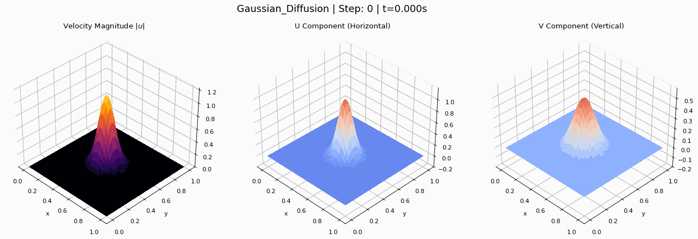

Fluid-GPU
Solving Burgers' PDE on GPU using CUDA
Problem Definition
We solve the 2D Burgers' partial differential equation.
It describes a field $\mathbf{u}$ evolving over time with diffusion.
$$ \frac{\partial \mathbf{u}}{\partial t} + \mathbf{u} \nabla \mathbf{u} = \nu \nabla^2 \mathbf{u} $$
where $\mathbf{u} = [u, v]^T$ and $\nu$ is the diffusion constant.
2D System
$$ \frac{\partial u}{\partial t} + \frac{\partial (u^2/2)}{\partial x} + \frac{\partial (uv)}{\partial y} = \nu \nabla^2 u $$
$$ \frac{\partial v}{\partial t} + \frac{\partial (uv)}{\partial x} + \frac{\partial (v^2/2)}{\partial y} = \nu \nabla^2 v $$
Flux Definitions (u-component)
Flux along x-axis:
$$ F_{i + 1 / 2,j}^{(u)} = \frac{1}{2}\left( \frac{(u_{i,j}^n)^2}{2} + \frac{(u_{i+1,j}^n)^2}{2} \right) - \frac{1}{2} \max(|u_{i,j}^n|, |u_{i+1,j}^n|)(u_{i+1,j}^n - u_{i,j}^n) $$Flux along y-axis:
$$ G_{i,j+1/2}^{(u)} = \frac{1}{2}(v_{i,j}^n u_{i,j}^n + v_{i,j+1}^n u_{i,j+1}^n) - \frac{1}{2} \max(|v_{i,j}^n|, |v_{i,j+1}^n|)(u_{i,j+1}^n - u_{i,j}^n) $$Flux Definitions (v-component)
Flux along x-axis:
$$ F_{i + 1 / 2,j}^{(v)} = \frac{1}{2}(u_{i,j}^n v_{i,j}^n + u_{i+1,j}^n v_{i+1,j}^n) - \frac{1}{2} \max(|u_{i,j}^n|, |u_{i+1,j}^n|)(v_{i+1,j}^n - v_{i,j}^n) $$Flux along y-axis:
$$ G_{i,j+1/2}^{(v)} = \frac{1}{2}\left( \frac{(v_{i,j}^n)^2}{2} + \frac{(v_{i,j+1}^n)^2}{2} \right) - \frac{1}{2} \max(|v_{i,j}^n|, |v_{i,j+1}^n|)(v_{i,j+1}^n - v_{i,j}^n) $$Full Update Step
Using Lax-Friedrichs (Rusanov) method
Python Interface
import numpy as np
from fluidgpu import solver_steps
# ... initialize u and v with numpy ...
# Run solver on GPU
solver_steps(
u=u,
v=v,
nu=0.01, # Diffusion constant
dt=0.001, # Time step
dx=1.0/(nx-1), # Grid spacing x
dy=1.0/(ny-1), # Grid spacing y
steps=100 # Number of steps
)
Simulation Demo (single wave)
Pressure wave simulation
Simulation Demo (colliding waves)

Pressure wave simulation
Performance Gain

Achieved ~15x speedup compared to PyTorch implementation on any problem size.